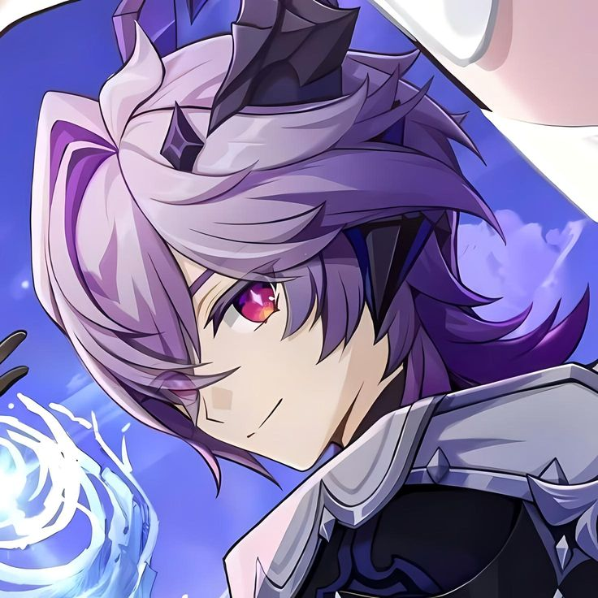

-
Entrada vacía
...

Faber est suae quisque fortunae.
...
Hora de Aventura o Adventure Time es mi serie favorita de todos los tiempos, le gana a cualquier película, obra de lo que sea. Probablemente abra otras entradas hablando de esta serie, no sólo porque es mi favorita, sino porque es una serie sumamente rica en temas, simbolismos, personajes, historias, etc. En fin, amo a Finn y es mi personaje favorito de todos los tiempos.
No hay una respuesta corta a esta pregunta, son mis animales favoritos junto con los tiburones desde que tengo uso de razón, y cuanto más aprendía de ellos más me fascinaban y sobre todo me fascinaba el hecho de que fueran tan diferentes a los humanos.